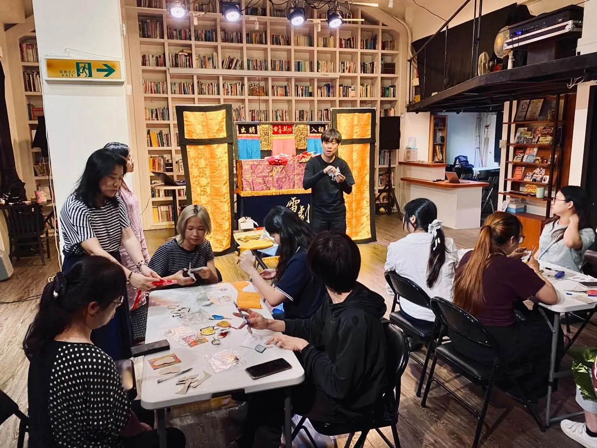
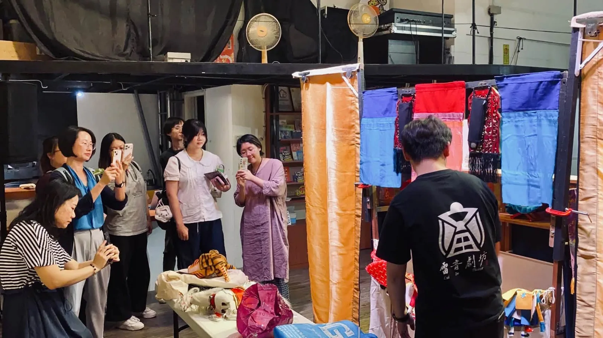

2026.10.21–10.25 · 大稻埕國際藝術節 · 思劇場 Thinkers’ Theater
《豬八戒痟娶某》親子偶戲互動體驗
從看戲開始，再靠近戲棚、認識戲偶、動手製作。讓布袋戲不只發生在台上，也成為觀眾可以直接參與的一段經驗。
Activity Review
從演出，走進掌中戲的世界。
雷音劇坊以《豬八戒痟娶某》作為親子觀眾接觸傳統偶戲的入口，從演出與角色示範開始，帶觀眾近距離觀看戲棚、戲偶與操演方式，再延伸至手作體驗與交流。
- 活動
- 2026 大稻埕國際藝術節「街區藝埕｜親子偶戲藝術週」
- 節目
- 雷音劇坊《豬八戒痟娶某》
- 地點
- 思劇場 Thinkers’ Theater
- 形式
- 布袋戲演出／戲偶與操演示範／親子互動／手作體驗
Photo Archive
現場紀錄
從演出、示範到手作交流，留下親子觀眾走近掌中戲的現場片刻。



